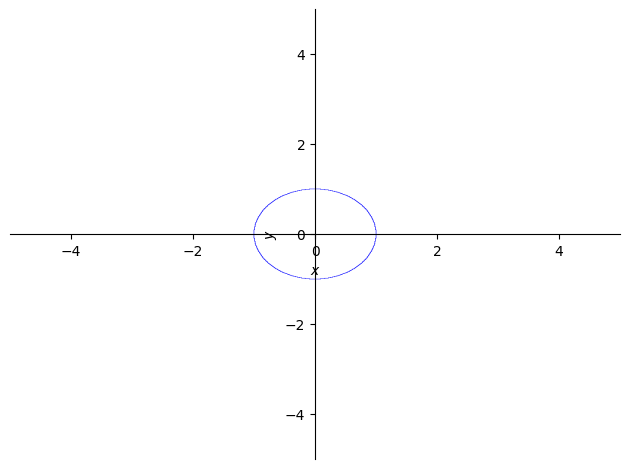
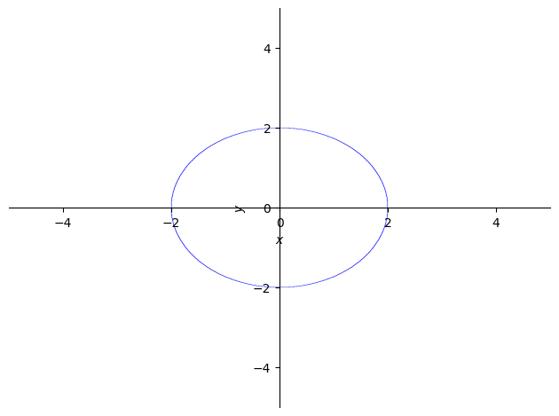

Unit Circle Notes
Some time ago I wrote a CodeSolid article on graphing math functions in Matplotlib – which mainly focused on getting the aspect ratio looking more like a piece of standard graph paper, and less like what your computer wants to do by default (hint: 1024x768 is not 1000x1000, or what have you).
OK, this circle kind of works now but I spent some time (see below) trying to fix the axes according to these instructions. That code is apparently legacy and doesn’t work. This is much easier to do in Desmos, where I just googled it and made myself a copy of this handy beast.
[2]:
from sympy import plot_implicit, Eq, symbols
x,y = symbols('x y')
plot_implicit(Eq(x**2+y**2, 1))
[2]:
<sympy.plotting.plot.Plot at 0x106ac0190>
[15]:
from sympy import plot_implicit, Eq, symbols
x,y = symbols('x y')
circle_plot = plot_implicit(Eq(x**2+y**2, 1))
ax = circle_plot.axis # get matplotib's figure and ax
ax.axis('tight')
ax.set_aspect('equal')
ax.grid(True)

---------------------------------------------------------------------------
AttributeError Traceback (most recent call last)
Cell In[15], line 5
3 circle_plot = plot_implicit(Eq(x**2+y**2, 1))
4 ax = circle_plot.axis # get matplotib's figure and ax
----> 5 ax.axis('tight')
6 ax.set_aspect('equal')
7 ax.grid(True)
AttributeError: 'bool' object has no attribute 'axis'
[14]:
import matplotlib.pyplot as plt
import sympy as sy
x, y = sy.symbols('x y')
p1 = sy.plot_implicit(sy.Eq(x**2 +y**2, 4))
fg, ax = p1._backend.fig, p1._backend.ax
# Use matplotlib to change appearance:
ax.axis('tight') # list of float or {‘on’, ‘off’, ‘equal’, ‘tight’, ‘scaled’, ‘normal’, ‘auto’, ‘image’, ‘square’}
ax.set_aspect("equal") # 'auto', 'equal' or a positive integer is allowed
ax.grid(True)
fg.canvas.draw()
plt.show() # enter matplotlib's event loop (not needed in Jupyter)

---------------------------------------------------------------------------
AttributeError Traceback (most recent call last)
Cell In[14], line 9
6 fg, ax = p1._backend.fig, p1._backend.ax
8 # Use matplotlib to change appearance:
----> 9 ax.axis('tight') # list of float or {‘on’, ‘off’, ‘equal’, ‘tight’, ‘scaled’, ‘normal’, ‘auto’, ‘image’, ‘square’}
10 ax.set_aspect("equal") # 'auto', 'equal' or a positive integer is allowed
11 ax.grid(True)
AttributeError: 'list' object has no attribute 'axis'
[23]:
from math import sin, radians, sqrt
print(sin(radians(45)))
print(sqrt(2)/2)
0.7071067811865475
0.7071067811865476
[27]:
from IPython.display import IFrame
IFrame(src='https://www.desmos.com/calculator/lmivf5l3hr', width="100%", height=700)
[27]:
[ ]: